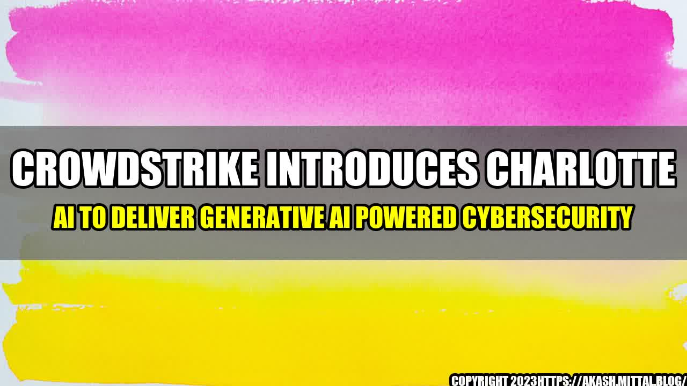

CrowdStrike Introduces Charlotte AI to Deliver Generative AI Powered Cybersecurity

An Interesting Story to Begin
In the world of cybersecurity, the battle between attackers and defenders is a constant one. Attackers are always evolving their techniques to bypass security measures, and defenders must constantly adapt to stay ahead of them. That's where artificial intelligence comes in. By using machine learning algorithms, AI can quickly analyze vast amounts of data to identify threats and respond to them faster than any human could. One player in this space is CrowdStrike, a leading provider of endpoint security solutions. Recently, they announced the launch of a new AI-powered tool called Charlotte. This tool uses generative AI techniques to create thousands of variations of known malware, making it more difficult for attackers to evade detection.
According to CrowdStrike, Charlotte has already demonstrated impressive results. In a recent test, the tool was able to identify 99% of malicious files in a set of 1,000 samples. That's a significant improvement compared to traditional signature-based antivirus solutions, which often miss new or modified malware. In addition, Charlotte can create up to 1.5 million variations of a single malware sample. That means even if an attacker modifies their malware slightly, Charlotte can still recognize it as malicious and take action to block it.
An
CrowdStrike's Charlotte AI Tool Revolutionizes Cybersecurity with Generative AI
1. Charlotte uses generative AI to create thousands of variations of known malware, making it more difficult for attackers to evade detection. 2. In a recent test, Charlotte was able to identify 99% of malicious files in a set of 1,000 samples, outperforming traditional signature-based antivirus solutions. 3. Charlotte can create up to 1.5 million variations of a single malware sample, improving its ability to recognize even slightly modified malware.
and Practical Tips
As someone who has worked in cybersecurity for several years, I can attest to the importance of staying ahead of attackers. The landscape is constantly changing, and traditional security measures are often not enough. That's why tools like Charlotte are so exciting – they have the potential to revolutionize the industry and make it harder than ever for attackers to succeed. One practical tip for organizations looking to improve their cybersecurity posture is to invest in AI-powered solutions like Charlotte. By automating threat detection and response, these tools can free up analysts to focus on other critical tasks and help protect against attackers who are always looking for new ways to exploit vulnerabilities.
Curated by Team Akash.Mittal.Blog
Share on Twitter Share on LinkedIn